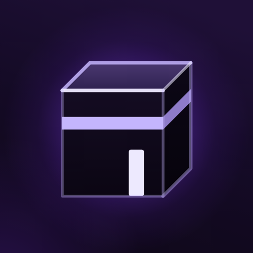
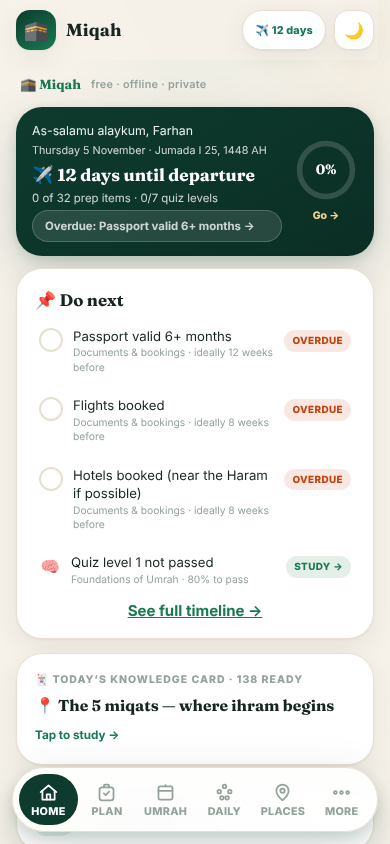
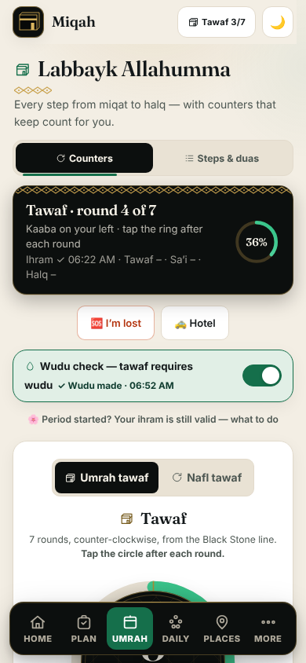
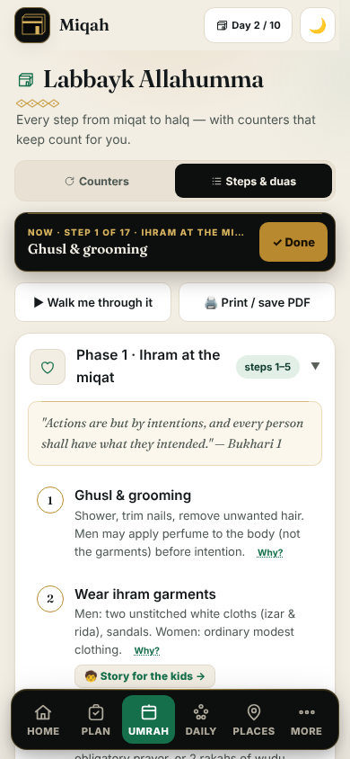
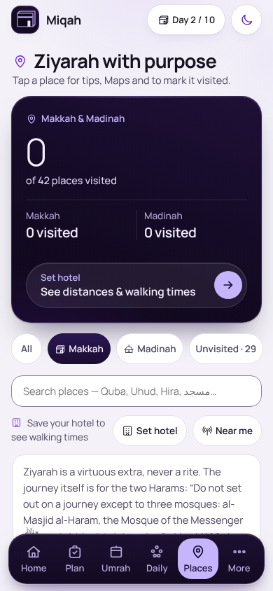
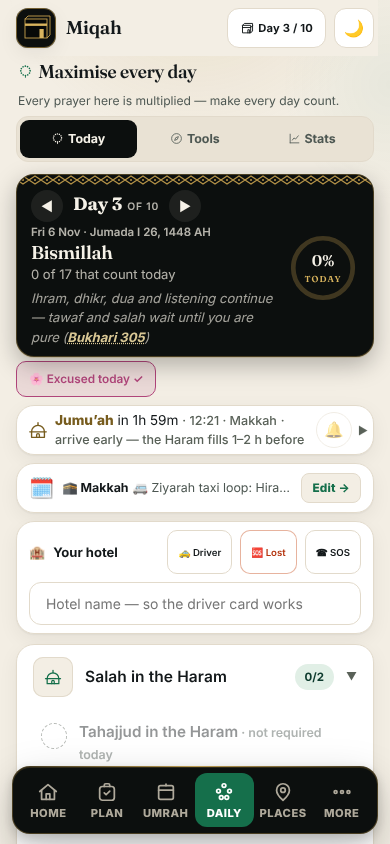

Plan it, learn it, walk every rite with the duas in your hand, and count your tawaf without losing your place.
Everything for the journey, in one app that keeps working when the signal does not.
Checklists dated by how far ahead each thing should be done, a departure countdown, a day-by-day itinerary and an encrypted vault for your documents.
The history, the virtues, the fiqh questions, guidance for sisters and a scam-awareness guide. Prove it in a quiz built for your journey: 7 levels for Umrah, or 10 for Hajj in the order of the five days.
Ihram, tawaf, sa'i and halq step by step, each dua in Arabic with transliteration and audio, and the evidence behind every action.
Giant tap counters for tawaf and sa'i with a full-screen mode that keeps the screen awake and remembers your round if the phone locks.
Why each one matters, its etiquette and access rules, its Arabic name, a driver card that works with no signal, and a route planner for your ziyarah day.
A daily worship tracker with streaks and achievements, offline prayer times for both cities, a qibla compass and a thirty-day habit keeper for when you get home.




